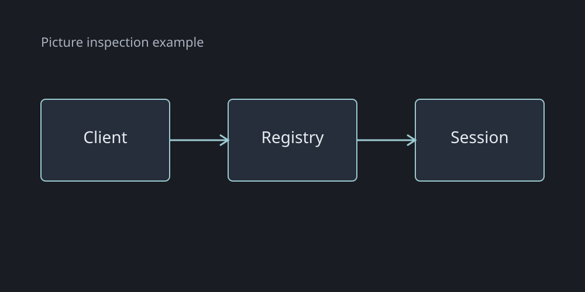
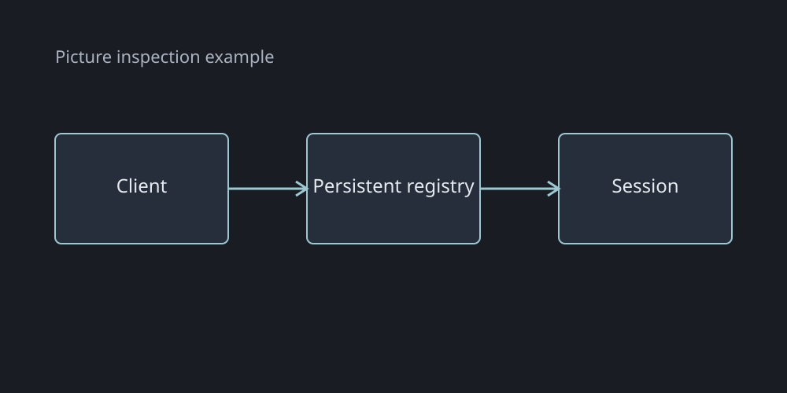

Use a fenced diagram in Markdown or an explicit island. Expand it to try Cmd+scroll zoom, Cmd+drag pan and Reset.
Copy the markup
<ex-mermaid id="diagram-example" label="Reconnect flow"><script type="text/plain">flowchart LR
Client --> Registry --> Session
</script></ex-mermaid>
Comparisons ex-compare
Label both views and compose ordinary content. The slider variant works well with pictures of the same size.
A disconnect loses the running session.A reconnect finds the same session.Copy the markup
<ex-compare><section label="Before"><ex-callout title="Transport owns state" tone="removed">A disconnect loses the running session.</ex-callout></section><section label="After"><ex-callout title="Registry owns state" tone="added">A reconnect finds the same session.</ex-callout></section></ex-compare>
Pictures and picture comparison
Pictures use ordinary HTML. Click the figure to inspect it; expand, zoom or pan. The slider compares two equal-size images.

A normal HTML figure uses the shared inspector.

Trees ex-tree
A Markdown list becomes a collapsible tree. Text wraps under the label, preserving inline code and paragraph boundaries.
- done: Read the contract
- planned: Implement the registry with `SessionId` and a long explanation that wraps naturally beside its icon.
- question: Confirm expiry semantics
- [ ] Verify reconnection
- [x] Keep source and rendered views
Copy the markup
<ex-tree title="Delivery work" icon="rocket">
- done: Read the contract
- planned: Implement the registry with `SessionId` and a long explanation that wraps naturally beside its icon.
- question: Confirm expiry semantics
- [ ] Verify reconnection
- [x] Keep source and rendered views
</ex-tree>
File trees ex-file-tree
Use an inert plain-text tree to explain repository changes without implementing a file browser.